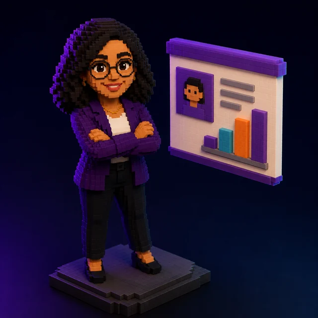

Convierto conocimiento en sistemas que operan.
Jennifer Salazar Duke
Arquitecta de sistemas de IA, datos y trazabilidad. CEO de Salazar Duke Impact Hub y cofundadora de AKDARA. Innovation Catalyst certificada por el GIM Institute.

Qué hago
Un mismo recorrido, sin importar el sector: del dato disperso a la decisión trazable.
Datos
Ordenar lo que la organización ya sabe pero tiene disperso.
Modelos de IA
Recomendadores, clasificadores y asistentes con un propósito concreto.
Automatización
Que el sistema opere solo, sin depender de que alguien se acuerde.
Trazabilidad
Que cada decisión se pueda auditar. Sin esto, lo demás es humo.
Diseño sistemas que convierten conocimiento en operación medible, para que las organizaciones y quienes las lideran decidan con más claridad y menos riesgo.
Cada producto que construyo se mide contra algo verificable: tiempo, cobertura, ahorro y calidad. Si no se puede medir, no se puede sostener en una reunión.
Trabajo en salud mental, legaltech, educación y Web3. Sectores distintos, mismo problema de fondo: hay conocimiento valioso atrapado en la cabeza de alguien, y nadie más puede usarlo.

Reconocimientos recientes
Validación externa, no autopercepción.

1.er lugar · Reto de marketing · Maratón de IA de Ruta N
El reto salió de un problema real: producir contenido de forma consistente, sin perder la voz de marca y sin un equipo grande detrás. Publican cuando se acuerdan, se quedan sin ideas a los tres días, y cada pieza parece de otra marca.
Todos los equipos llegamos con el mismo modelo disponible. La diferencia no estuvo ahí. Estuvo en la arquitectura.
- Un prompt te da una respuesta. Un arnés te da un sistema: contexto que no se pierde, un orquestador que encadena, métricas que deciden el próximo ciclo, y registro de todo lo que pasó.
- Con eso construí Musa: toma lo poco que una marca ya tiene y devuelve identidad, calendario, copy e imágenes por canal. Con su voz.
- Lo que no busqué y encontré: al terminar, la arquitectura ya cumplía buena parte de ISO/IEC 42001, la norma internacional de gestión de IA. Trazabilidad, medición y responsabilidades definidas, porque un sistema serio las exige.
Si en tu empresa la IA ya está produciendo, la pregunta no es qué tan bueno es el output. Es si puedes auditarlo.
2026 · Ruta N + smart4ai · repositorio abierto2.º lugar · Hackathon Talento Tech
Un reto, veinticuatro horas de desarrollo, un producto vivo. Con un equipo de cinco personas construimos CAVALTEC: una aplicación que permite a cualquier empresa medir en cinco minutos su cumplimiento de la Ley 1581 de protección de datos, respondiendo once preguntas, y recibir un plan de acción generado con IA según su sector y su tamaño.
- Recomendaciones que se adaptan al perfil real. Cinco sectores por cuatro tamaños: una microempresa de salud recibe un consejo distinto al de una financiera grande para el mismo control. No es un test genérico.
- Privacidad por diseño aplicada al propio producto. A la IA solo viajan códigos de pregunta y métricas agregadas. Cero datos personales de titulares salen de la base. Una herramienta que evalúa protección de datos tiene que empezar por respetarla.
- Vale, una asesora conversacional que conoce el diagnóstico puntual de cada empresa y responde sobre sus brechas concretas, no en general.
- Reporte PDF con análisis de IA, listo para llevar al área legal o a la alta dirección.
La lección: cuando el producto se piensa desde el usuario, la tecnología deja de ser protagonista y se vuelve invisible. Que es exactamente donde debería estar.
2026 · Programa Talento TechGanadores · Caribe Innova
Solución de IA y blockchain para trazabilidad y confianza, con microcapitalización del programa.
2025Innovation Catalyst · GIM Institute
Credencial internacional en gestión de innovación. Vigente hasta noviembre de 2030.
Nov 2025Mentoría IXL Center
Validación internacional en Innovation Management para el portafolio de AKDARA.
2025Trayectoria
De asistencia legal federal a arquitectura de sistemas de IA. El hilo conductor siempre fue el mismo: ordenar información compleja para que alguien pueda decidir.

AKDARA antes Trazzos Labs
Sep 2025 — ActualLaboratorio de innovación aplicada que diseña sistemas para decisiones claras y operación con menor riesgo. Portafolio: Arkana (conocimiento organizacional consultable) y Cluster Pro (coordinación interempresarial, validado con un clúster industrial). Actualmente en la Ruta del Emprendimiento de la Alcaldía de Medellín.
Salazar Duke Impact Hub
Jun 2023 — ActualEcosistema de innovación social donde la neurodiversidad se trata como ventaja competitiva. Liderazgo servicial, tecnología con propósito humano, integración terapéutica (CBT) y doble impacto medible (SROI). Metodología propia KAIA, de aprendizaje inverso emocional-cognitivo.
Dra. María Victoria Pérez
Sep 2024 — ActualModernización del legado clínico en Trastorno Límite de la Personalidad mediante IA y gestión de datos. Resultado medible: 251 videos clínico-educativos convertidos en activos digitales. En curso: un asistente inteligente que consolida más de 30 años de conocimiento clínico en un producto consultable.
Criminal Law Don Bailey
Ene 2019 — ActualAtención integral a cerca de 50 casos penales federales, incluyendo personas colombianas, costarricenses y guatemaltecas extraditadas al Distrito Este de Texas.
KAINOS Biocosmética
Mar — Jul 2024Aplicación de IA para mejorar la narrativa de venta y el argumentario comercial de la marca.
Alcaldía de Medellín · Secretaría de Desarrollo Económico
Estado JovenAsesoría a emprendedores locales en modelos de negocio, análisis de propuesta de valor y validación de mercado.
Proyectos
Cosas que construí, no cosas que estudié.
CAVALTEC
Diagnóstico de cumplimiento de la Ley 1581 en cinco minutos: once preguntas y un plan de acción con IA adaptado a cinco sectores por cuatro tamaños de empresa. Incluye a Vale, asesora conversacional que responde sobre las brechas concretas de cada diagnóstico, y reporte PDF para llevar al área legal.
Musa
Arnés de agentes para producción de contenido de marca: toma lo poco que una marca ya tiene y devuelve identidad, calendario, copy e imágenes por canal, con su voz. Contexto persistente, orquestador que encadena, métricas que deciden el siguiente ciclo y registro auditable de cada paso. La arquitectura cumple buena parte de ISO/IEC 42001.
Asesor Virtual SDIH
Chatbot en Telegram que recomienda contenido formativo según el perfil del usuario, combinando machine learning supervisado con IA generativa. Captura la demanda automáticamente y genera inteligencia de mercado en tiempo real.
Ikigai IA
Recomendador ocupacional inspirado en el concepto japonés de propósito vital. Integra datos abiertos del DANE sobre habilidades laborales en Colombia con un modelo KNN para sugerir ocupaciones.
Clasificador biomédico multietiqueta
Asigna dominios médicos (cardiovascular, neurológico, hepatorrenal, oncológico) a partir de título y abstract, para acelerar la priorización de lectura científica. IAY Data Challenge 2025.
POSTEDOR Inteligente
Prototipo Web3 de infraestructura eléctrica trazable con identidad digital. Latin Hack 2025. Mi rol: estrategia, narrativa y dirección del pitch.
Chatbot para INGE LEAN S.A.S
Asistente conversacional que evoluciona de FAQ a asistente adaptativo, con métricas objetivo: menos de 2 segundos por respuesta, 90% de cobertura y trazabilidad completa. Hackathon de IA, Risaralda 2025.
Hacia dónde voy
2026 — 2030
PhD · Georgia Tech
Investigación aplicada en Lab-to-Product: traducir conocimiento clínico en TLP a sistemas de IA escalables, con KAIA como aporte metodológico original. Objetivo: otoño de 2029.
Escalar el portafolio
Consolidar Arkana y Cluster Pro como referencia en infraestructura de confianza B2B para empresas medianas en Latinoamérica.
Producto clínico-educativo
Empaquetar más de 30 años de conocimiento en TLP como asistente consultable, con trazabilidad clínica y métricas de uso reales.

Formación y credenciales

Educación
- Especialización en Finanzas y Proyectos
- Administradora de Negocios Internacionales
- Deep Learning Avanzado
- Bootcamp en Inteligencia Artificial
Certificaciones
- Innovation Catalyst — GIM Institute
- Liderazgo Responsable en IA — Microsoft
- Innovation Management — IXL Center
- Machine Learning — diploma certificado
- EF SET C1 — inglés profesional
- Insignia STEMinistA